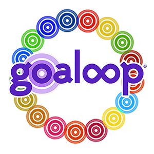

About the Goaloop Climate Report
The Goaloop Climate Report (GCR) shows the changes in three critical climate metrics, using data collected by the NASA Goddard Institute for Space Studies (GISS), the National Oceanic and Atmospheric Administration (NOAA), and the National Snow and Ice Data Center (NSIDC):
- Global Average Temperature Anomaly
- Atmospheric CO2
- Arctic Sea Ice Extent
Noting the stock market report is a staple of daily newscasts, with its up and down arrows directing many, and knowing that climate change will increasingly impact the economy, the GCR posits climate metrics within the same visual context to bring attention to the status of our climate, and to likewise motivate us to take action to turn those red arrows upside down so they are green.
The numeric values of the GCR are meant to cut through perceptual uncertainties of climate change, perpetual reports of ‘bad weather,’ complex climate statistics, and each month focus our attention on i) how fast our climate is changing, ii) what we can do to reverse it, and iii) spotlight signs of progress.
In addition to producing the GCR itself, we welcome climate change photos sent in by the public, personal stories of how climate change is affecting lives, impacting income, and the work underway right now that is leading to progress.
Please join us in broadcasting the Goaloop Climate Report on air, online, and via social media: be the first to receive it each month by dropping your info in the contact form.
About Goaloop
The Goaloop Climate Report at Goaloop.org evolved from a goal that was set on Goaloop.com, active at:
goaloop.com/goaloop/climate
Goaloop.com is a new system that helps you reach your goals and connects the world through goals. In beta, Goaloop.com scales from your one personal goal to goals all over the world, connecting us by the common denominator of what we are seeking to achieve. The Goaloop Climate Report is an example of Goaloop.com’s ability to mobilize collective resources around goals. Read more about Goaloop below.
The Goaloop Climate Report Team
Lori Terrizzi
Founder
Lori Terrizzi is the CEO/Founder + Site Architect of Goaloop, a new system that helps you reach your goals and connects the world through goals. An M.F.A. graduate of Columbia University’s Film Division, where she was awarded a fellowship for study, Lori is passionate about art forms that fuse creative expression with technology, finding solutions to problems, and improving lives. Goaloop is the product of her life-long focus on issues of identity. Connecting everyone by the common denominator of our goals, across sectors, expands social circles and creates new opportunities for everyone. Goaloop uses the goal as a humanistic unit to transcend social, business, and ideological boundaries, uniting us in constructive ways while defying typical gender, zip code and other categorizations that divide, limit, and shape us.
While completing her degree at Columbia, Lori worked part-time at Lehman Brothers; its collapse in the Fall of ’08 and its implication in the worldwide economic downturn focused her attention on the concept of a stock market, which coalesced with other concerns, and led her to re-envision a new kind of marketplace for the 21st century: Goaloop, The Goal Market®.
Lori previously served as Executive Director of an international non-profit organization founded by writers to help persecuted writers worldwide, and she founded ReInventions to establish an online library of films (pre-YouTube) that chronicle individual and collective transformations, using film as a metaphor to explore authorship in society. Her work in both non-profit and for-profit sectors has involved designing websites and customized technology solutions. Early pivotal experiences include a sculpture apprenticeship in Italy and an internship at The Art Commission of the City of New York. She is a Phi Beta Kappa graduate of Rutgers College, where she majored in art history and received a scholarship for the study of art and music.
Born and raised in Amherst, Massachusetts, the granddaughter of immigrants from Italy and Armenia, Lori now lives in New York City, where Goaloop began as a series of questions, and Toni Morrison’s rose. Read more here.
Wilson Lui
Data Scientist
Wilson Lui received his M.S. in Data Science from Columbia University’s School of Engineering and Applied Science, where he studied natural language processing and deep learning. During this time, he developed a passion for machine learning in its many forms. His master’s capstone project focused on predicting the outcomes of each of the 2018 U.S. House of Representatives Elections using a combination of mobile polling data, psychometric testing, and Bayesian hierarchical models.
While studying at Columbia, Wilson interned at the New York County District Attorney’s Office, where he developed an experimental process for detecting socially close people in call detail records, and at the NASA Goddard Institute for Space Studies, where he used clustering algorithms to produce novel visualizations of climatology data.
Wilson previously worked in online advertising at WebMD. He received his B.A. in Economics from Rutgers University. On Saturdays, he volunteers for Apex for Youth, helping fourth grade public school students to improve their reading comprehension and math skills while preparing them for the New York State Common Core Test.
Dr. Anastasia Romanou
NASA Scientist, Advisor
Dr. Anastasia Romanou is a Research Physical Scientist at the NASA Goddard Institute for Space Studies and an adjunct professor in Applied Physics and Applied Mathematics at Columbia University. Specializing in Oceanography, she works in climate science with a focus on the influence and interdependence of the oceans and the Earth System. She is a member of the Earth Science Advisory Committee at NASA and has taught numerical modeling for climate applications at Columbia University.
Dr. Romanou’s research interests include large-scale circulation of the oceans, air-sea interactions and exchanges, the global carbon cycle, the ocean thermohaline circulation, climate variability, and climate modeling. She has written extensively in related areas, most recently publishing the “Ocean Carbon States” database: A proof-of-concept application of cluster analysis in the ocean carbon cycle, co-authored with Rebecca Latto.
Dr. Romanou holds a Ph.D. in Physical Oceanography from Florida State University, a Masters of Science in Oceanography from the University of Athens, Greece, where she also earned a B.A. in Physics.
News:
We are thrilled and honored to welcome Richard Peña as an Advisor at Goaloop!
Richard Peña
Advisor
Richard Peña is a Professor of Film Studies at Columbia University, where he specializes in film theory and international cinema. From 1988 to 2012, he was the Program Director of the Film Society of Lincoln Center and the Director of the New York Film Festival. At the Film Society, Richard Peña organized retrospectives of many film artists, including Michelangelo Antonioni, Sacha Guitry, Abbas Kiarostami, King Hu, Robert Aldrich, Roberto Gavaldon, Ritwik Ghatak, Kira Muratova, Fei Mu, Jean Eustache, Youssef Chahine, Yasujiro Ozu, Carlos Saura and Amitabh Bachchan, as well as major film series devoted to African, Israeli, Cuban, Polish, Hungarian, Chinese, Arab, Korean, Swedish, Turkish, German, Taiwanese and Argentine cinema. Together with Unifrance, he created in 1995 “Rendez-Vous with French Cinema,” the leading American showcase for new French cinema. A frequent lecturer on film internationally, in 2014-2015, he was a Visiting Professor in Brazilian Studies at Princeton, and in 2015-2016 a Visiting Professor in Film Studies at Harvard. In May, 2016, he was the recipient of the “Cathedra Bergman” at the UNAM in Mexico City, where he offered a three-part lecture series “On the Margins of American Cinema,” and December, 2017, gave a course in “International Cinema After 1990” at Beijing University. He also currently hosts WNET/Channel 13’s weekly Reel 13.
Goaloop – The Goal Market®
Connecting the World through Goals®
Goaloop® is the world’s Goal Market®, the one-stop solution for goal achievement. Got a goal? Goaloop it! State your goal on Goaloop and everything appears for you to reach it: the right people, resources, incentives, and support – in a thriving community propelled by AI and the latest technology to help us achieve our individual and collective potential, skyrocketing collaboration and innovation.
Most networks connect people based on ‘who’ you know. Goaloop’s Goal Network® connects people based on ‘what’ your goals are. A goal to learn the guitar matches a goal to teach guitar, and sell guitars, and make guitars. Goaloop uses the goal to transcend social, business and ideological boundaries to unite us and focus on getting things done, expanding social circles and creating new opportunities in work and life. No matter what goal you have, someone else has a goal that will help you to achieve it.
Studies show we are addicted to social media platforms and digital devices, yet we have trouble focusing on our goals. Goaloop harnesses technology to focus you on your own goals.
Selfie? Govie. Every goal tells a story and automatically becomes an editable ‘goal movie’ on Goaloop – a Govie™. Govies feature doers, people taking action toward their goals as instantly as snapping a selfie. We’ll be streaming Govies on Goaloop.TV.
Goaloop is patent pending and based on the conclusion that the goal is the smallest unit of human motivation, the origin of all action, the common denominator among all productivity, a measurable unit, a creative unit, our natural currency.
We live in a globalized world with global opportunities and global problems yet we do not have a global productivity platform, until now: Goaloop is the Goal Engine®, based on the belief that connecting goals, we can achieve anything together.
Goaloop is a founding client of Yale Law School’s Entrepreneurship & Innovation Clinic.
Many on Goaloop’s team have connections to Columbia University:
entrepreneurship.columbia.edu/startup/goaloop-2/
Read more about Goaloop from Founding Member Jack Kim, PhD:
medium.com/@goaloop/goaloop-the-possibilities-are-endless
Please join us at:
linkedin.com/company/goaloop instagram.com/goaloop medium.com/@goaloop x.com/goaloop bsky.app/profile/goaloop.bsky.social youtube.com/goaloop facebook.com/goaloop wellfound.com/company/goaloop/people pinterest.com/goaloop
Got a goal? Goaloop it!
Connecting goals, we can achieve anything together.
